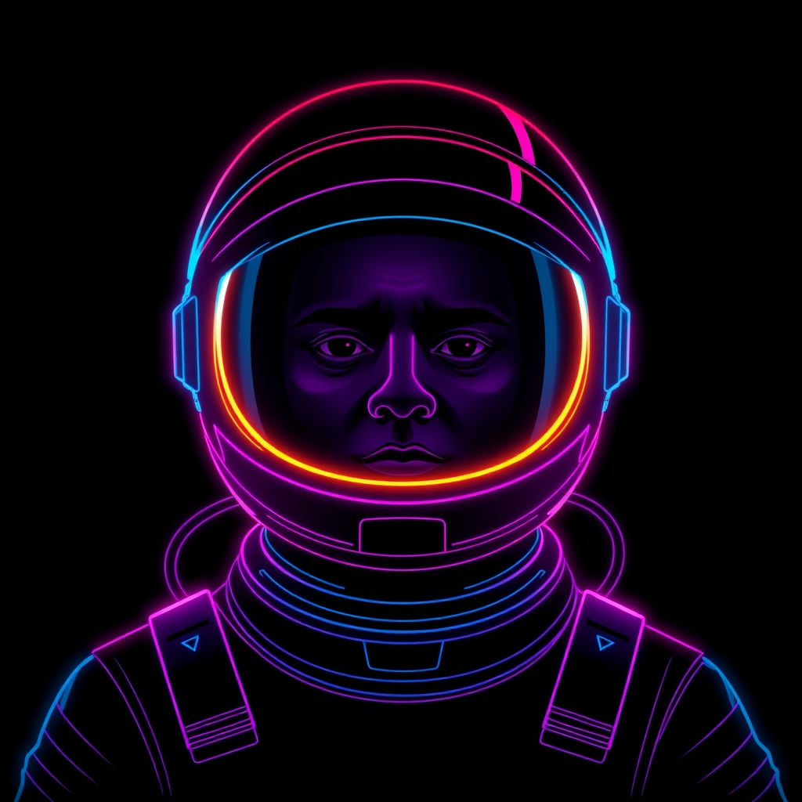

A trap was set by somebody who will never meet it. An ambush came along with it.
gamegame within
XXXIXchapterv39

felix207229 August 2026 · 20:48
what happened
felix2072 wired three asteroids into a triangle that kills on contact - shoot down any one corner to break the circuit, or outlast its twenty seconds. Testing it meant flying as GUEST, since their own trap would not so much as blink at them.
landed as “Three rocks, wired together, and the wire means it”
the numbers
3sectors touched
162lines aboard
0jettisoned
20:48on the clock
0days after v38
2ndversion by felix2072
the commit, drawn
3 sectors on the scan, each drawn as the thing it is; 2 of them arrived in this commit; the heavy one is src/entities/circuit.js.
meanwhile
While v39 was on the cabinet, David Friedrich changed the rules.
landed as “The notes pages stop earning a mark nobody wrote by hand” — 30 August 2026
The rules themselves were altered: What the book calls its own pages now includes the notes pages tools/docs.sh renders, asked of that tool rather than listed here, so a rule change stops wearing a notes mark for generated output. The nine marks do not move and no hand-written path changes mark.
While v39 was on the cabinet, David Friedrich changed the rules.
landed as “The manifest line stops shouting game over everything else” — 30 August 2026
The rules themselves were altered: src/features.js inherits its mark from the change it is part of rather than asserting game over it, so a branch directory says which part of the cabinet somebody was standing in. The nine marks and their order do not move, and the manifest alone still reads as game.
While v39 was on the cabinet, David Friedrich changed the rules.
landed as “The book stops writing meanwhile about its own paperwork” — 30 August 2026
The rules themselves were altered: What the book counts as its own paperwork is the pages plus the badge strip that is repainted with them, and the generated ledger counts as neither paperwork nor work. No rule text moves; the silence CLAUDE.md already promised now covers a filing whoever pressed the button.
While v39 was on the cabinet, David Friedrich changed the rules.
landed as “A merge is nobody's work, and the referee finally agrees” — 29 August 2026
The rules themselves were altered: The pre-commit reading of a merge is the resolution rather than the whole of what came across, and GR12 does not ask the tally about a history that is one parent short. No rule text moves; GR10 and GR13 stop firing at people for the shape of a branch point, which is what they always said they were not about.
While v39 was on the cabinet, David Friedrich changed the rules.
landed as “The tower says the name of whoever it is talking to” — 29 August 2026
The rules themselves were altered: A waveoff addresses the author of the pull request by name, and only the author.
While v39 was on the cabinet, David Friedrich changed the rules.
landed as “The tower learns to wave a landing off” — 29 August 2026
The rules themselves were altered: A skill and its tool for a pull request that cannot land. It comments and never clears: pushing a fix to somebody's branch, merging round it, or opening a competing pull request are all refused in the skill, and the merge button stays where GR7 put it.